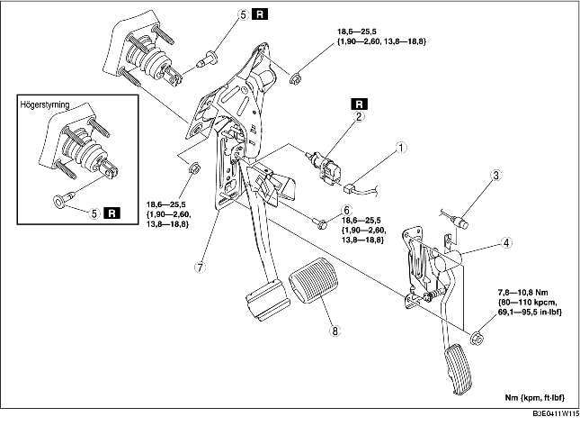

1. Vid vänsterstyrning, demontera batteriet och batterihållaren. (Se DEMONTERING/MONTERING AV BATTERI [ZJ, Z6].) (Se DEMONTERING/MONTERING AV BATTERIET [LF].)
2. Koppla ur bromsröret (huvudcylindersidan). (Se DEMONTERING/MONTERING AV HUVUDCYLINDER.)
3. Demontera i den ordning som anges i tabellen.
4. Montera i omvänd ordning mot demonteringen.
5. Justera gasvajern. (Se KONTROLL/JUSTERING AV GASVAJERN [ZJ, Z6].) (Se KONTROLL/JUSTERING AV GASVAJERN [LF].)

.
|
1
|
Bromsomkopplarens kontakt
|
|
2
|
Bromskontakt
|
|
3
|
Gasvajer
|
|
4
|
Gaspedal
|
|
5
|
Förbandsstift
|
|
6
|
Bult (Vänsterstyrd)
|
|
7
|
Bromspedal
|
|
8
|
Pedalgummi
|
1. Demontera bromspedalens fästmuttrar.
2. För servobromsenheten mot fordonets front där servobromsenhetens gaffel inte stör bromspedalens arm.
3. Demontera bromspedalen.
1. Vid vänsterstyrning, montera den nya kopplingspinnen genom att placera hålen på bromspedalen och servobromsenhetens gaffel mitt för varandra.
2. Vid högerstyrning, montera den nya kopplingspinnen genom att placera hålen på bromspedalstället och servobromsenhetens gaffel mitt för varandra.
3. Kontrollera att kopplingspinnen rör helt vid servobromsenhetens gaffel.
1. Kontrollera bromspedalen. (Se KONTROLL AV BROMSPEDAL.)
2. När bromspedalen är helt fri, sätt i en ny bromskontakt i monteringshålet på bromspedalen.
3. Fäst bromskontakten genom att vrida den moturs 45°.